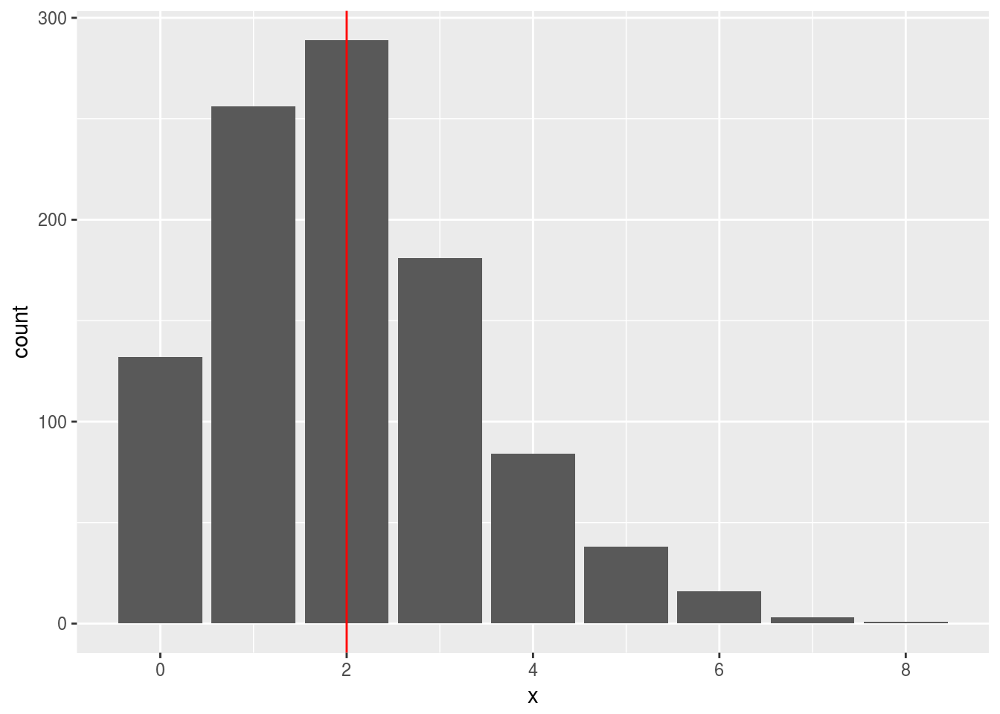
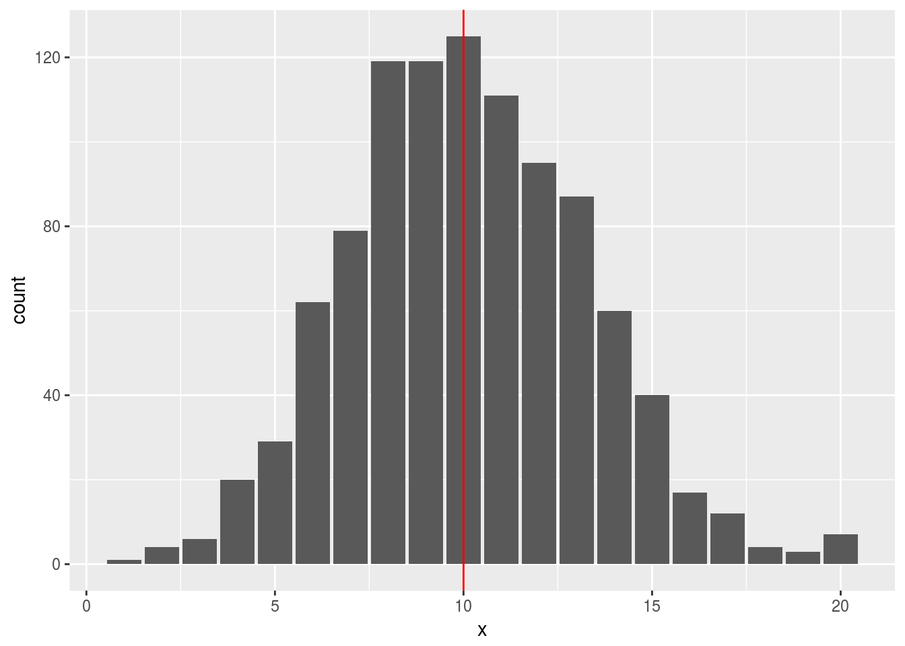

Making a lot of plots all at once, the tidyverse way
Introduction
I was thinking the other day about how you might come up with a bunch of separate-but-related plots, without plotting them one by one, for example to show a class.
By way of example, suppose we want to plot a number of Poisson distributions with different means, so that we can compare their shapes. The textbook says that a Poisson with a large mean is “approximately normal”, but that is just words until you see it on a picture. The advantage of the Poisson distribution, for expository purposes, is that it only has one parameter (which is both its mean and its variance).
Packages
The tidyverse, plus a random number seed (for reproducibility):
library(tidyverse)## ── Attaching packages ─────────────────────────────────────────────────────────────────────────── tidyverse 1.2.1 ──## ✔ ggplot2 2.2.1.9000 ✔ purrr 0.2.4
## ✔ tibble 1.4.2 ✔ dplyr 0.7.4
## ✔ tidyr 0.7.2 ✔ stringr 1.2.0
## ✔ readr 1.1.1 ✔ forcats 0.2.0## ── Conflicts ────────────────────────────────────────────────────────────────────────────── tidyverse_conflicts() ──
## ✖ dplyr::filter() masks stats::filter()
## ✖ dplyr::lag() masks stats::lag()set.seed(457299)Generating some random data
Let’s make a data frame with the means we want to use. The traditional name for a Poisson mean is lambda:
d=tibble(lambda=c(0.3,1,2,5,10))
d## # A tibble: 5 x 1
## lambda
## <dbl>
## 1 0.300
## 2 1.00
## 3 2.00
## 4 5.00
## 5 10.0I’m going to use rpois to generate 1000 random Poisson observations from distributions with each of those means. rpois takes two arguments, the number of values to generate and the mean in that order, but this is backwards for us because we want (for what we are about to do) to have the mean as a “variable” first argument and the number of values as a “fixed” second one. So I write a little helper function to do this for me:
random_poisson=function(lambda,n) {
rpois(n,lambda)
}Now I can use map from purrr to generate the random samples and store them in the data frame, which goes this way. (If you are not used to this kind of thing, take a deep breath before you move on.)
d = d %>% mutate(randoms=map(lambda,random_poisson,1000))This says, in words, “for each value in the lambda column, run the function random_poisson with that lambda value as its first input and the fixed value 1000 as its second, storing the results in randoms”.
There is another way to do this, effectively defining the function in the map, but I always forget how to code it, so I find it easier to write a helper function first, and use that as the second thing in map.
How can you store a vector of 1000 values in one cell of a data frame, you ask? Well, here is your answer:
d## # A tibble: 5 x 2
## lambda randoms
## <dbl> <list>
## 1 0.300 <int [1,000]>
## 2 1.00 <int [1,000]>
## 3 2.00 <int [1,000]>
## 4 5.00 <int [1,000]>
## 5 10.0 <int [1,000]>That thing randoms is a so-called list-column. In a list-column, each entry can be any kind of thing that you can save in an R variable, in this case a vector of 1000 integers. Except that you can’t see the actual values yet.
To see them, you unnest them:
d %>% unnest(randoms)## # A tibble: 5,000 x 2
## lambda randoms
## <dbl> <int>
## 1 0.300 1
## 2 0.300 0
## 3 0.300 0
## 4 0.300 0
## 5 0.300 0
## 6 0.300 1
## 7 0.300 0
## 8 0.300 0
## 9 0.300 0
## 10 0.300 1
## # ... with 4,990 more rowsThis “explodes” all the \(5 \times 1000\) values out so that you see them one by one, with the lambda values repeated as necessary, so that you know which Poisson mean each random value goes with.
Making a plot, take one
The ggplot thought process for making a collection of plots is that you put all the things you want to plot in the same columns, act as if you’re going to plot them all at once, and then at the last minute you throw in a facet_wrap that describes how you want the plots separated out, in this case by lambda. Because the Poisson distribution is discrete rather than continuous (only takes integer values), a bar plot is better than a histogram:
d %>% unnest(randoms) %>%
ggplot(aes(x=randoms))+
geom_bar()+
facet_wrap(~lambda,scales="free")The scales="free" part is to give each sub-plot its own scale, because what I was after was a comparison of shape, so I might as well have the sub-plots fill the space.
The story is that for small lambda, the distribution is skewed to the right, but as lambda increases, the skewness diminishes until by the time you get to lambda=10, the distribution looks bell-shaped to within sampling variability.
If you are really interested in normality, you could replace the bar plots with normal quantile plots, which goes this way:
d %>% unnest(randoms) %>%
ggplot(aes(sample=randoms))+
stat_qq()+
facet_wrap(~lambda,scales="free")The impression from the plots is confused by the discreteness, but the plots progress from an upward-opening curve (indicating right skewness) to very nearly straight (indicating very close to normal). Another way of looking at it is that when the mean is small, there is an appreciable probability of observing the lower limit of zero (and the distribution is skewed away upwards from that), but when the mean gets up to about 10, it is almost impossible to observe a zero and so the lower tail is more normal-like.
I wanted to plot the means on the bar plots, but the obvious thing didn’t work:
d %>% unnest(randoms) %>%
ggplot(aes(x=randoms))+
geom_bar()+
geom_vline(xintercept=d$lambda,colour="red")+
facet_wrap(~lambda,scales="free")The problem is that all the lambdas appear on all the plots, not the one that goes with each plot, which is what I wanted.
Grant’s comment (below), for which thanks, suggests a way around this: use a group= in the boxplot. This allows a proper reference to lambda in the geom_vline (which should have been inside an aes), like this:
d %>% unnest(randoms) %>%
ggplot(aes(x=randoms, group=lambda))+
geom_bar()+
geom_vline(aes(xintercept=lambda),colour="red")+
facet_wrap(~lambda,scales="free")
which works. and neatly negates the need for take two below (but I wanted to share it with you anyway).
Now, I made two modifications to my earlier plot: I added a group and I put an aesthetic in the geom_vline. Did I really need them both? Let’s try taking them out one at a time:
d %>% unnest(randoms) %>%
ggplot(aes(x=randoms))+
geom_bar()+
geom_vline(aes(xintercept=lambda),colour="red")+
facet_wrap(~lambda,scales="free")That works.
d %>% unnest(randoms) %>%
ggplot(aes(x=randoms, group=lambda))+
geom_bar()+
geom_vline(xintercept=d$lambda,colour="red")+
facet_wrap(~lambda,scales="free")
And that takes us back to where we were. So Grant’s second suspicion (in the comments below) was right: getting the aesthetic right in the geom_vline was the key.
Making a plot, take two
So I took a different tack. The elements of a list column can be anything: can they be plots? We’ll try the same two-step strategy as before: write a helper function to produce exactly the kind of plot I want, and then use map to (we hope) fill a column with plots.
The helper function first: given a vector of (integer) values and a value of lambda, make a bar plot of the integer values and on it put a vertical line at lambda, in red:
bar_mean=function(x,lambda) {
d=tibble(x=x,lambda=lambda)
ggplot(d,aes(x=x))+
geom_bar()+
geom_vline(xintercept=lambda,colour="red")
}Now, the map. This requires a bit of extra care, since the “for each” part has to loop over two variables in parallel: the random sample and the value of lambda. This requires using map2, which goes like this:
d = d %>% mutate(g=map2(randoms,lambda,bar_mean))
d## # A tibble: 5 x 3
## lambda randoms g
## <dbl> <list> <list>
## 1 0.300 <int [1,000]> <S3: gg>
## 2 1.00 <int [1,000]> <S3: gg>
## 3 2.00 <int [1,000]> <S3: gg>
## 4 5.00 <int [1,000]> <S3: gg>
## 5 10.0 <int [1,000]> <S3: gg>Those things in the g column really are ggplot graphs. But once again, they are hidden inside the list column. How do I get them out? unnest?
d %>% unnest(g)## Error: Each column must either be a list of vectors or a list of data frames [g]Nope. How about this?
d %>% pull(g)## [[1]]
##
## [[2]]##
## [[3]]
##
## [[4]]##
## [[5]]
When I tried this last night and it worked, I let out an audible gasp. (On an R Studio notebook, it’s even nicer, because you get little thumbnails of each plot that you can click on).
One final refinement: I’d like to have a title on each plot that says what lambda is, because in R Studio the plots don’t seem to come out in the right order. That’s a small fix to our helper function:
bar_mean_title=function(x,lambda) {
d=tibble(x=x,lambda=lambda)
ggplot(d,aes(x=x))+
geom_bar()+
geom_vline(xintercept=lambda,colour="red")+
ggtitle(str_c("Lambda is ",lambda))
}and away we go again:
d %>% mutate(g=map2(randoms,lambda,bar_mean_title)) %>% pull(g)## [[1]]##
## [[2]]##
## [[3]]##
## [[4]]##
## [[5]]As lambda increases, the mean gets closer to the peak of the bar plot, instead of being pulled to the right by the skew.